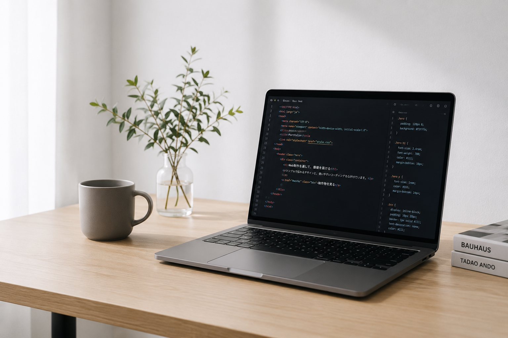

VIEW SITE
VIEW SITE
Web制作会社LP
架空のWeb制作会社を想定したLPを制作しました。余白や文字組みを意識し、シンプルで見やすいデザインに仕上げました。
私について
HTML / CSSを基礎から学び、
デザインからコーディングまで一貫して制作しています。
使いやすく、見やすいサイトを自分で考えて作ることを
大切にしています。

自己紹介
できること・スキル
デザインカンプをもとにしたコーディング、Flexbox・Gridを使ったレイアウト、 レスポンシブ対応ができます。
ハンバーガーメニュー、スライダー、タブ切り替え、アコーディオン、 フォームバリデーションなどを実装できます。
学習の一環としてオリジナルテーマ化を経験し、基本的な固定ページ・投稿ページの実装を行いました。
Gitを使ったバージョン管理と、GitHub Pagesを使った制作物の公開ができます。